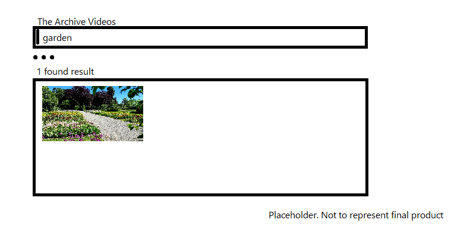
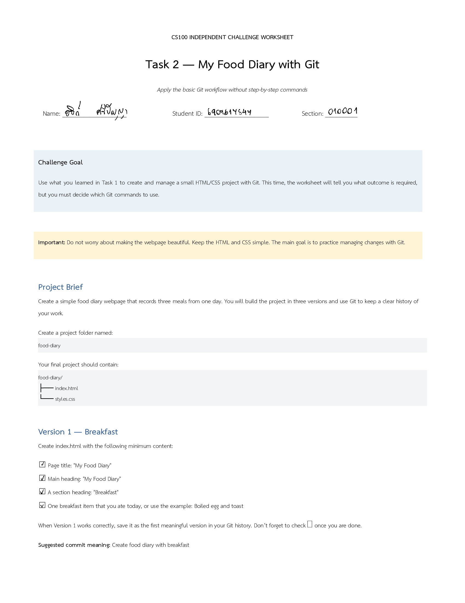
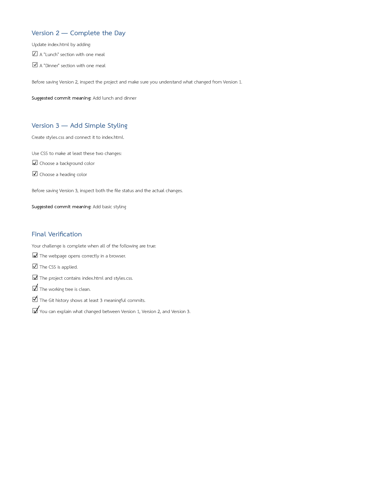
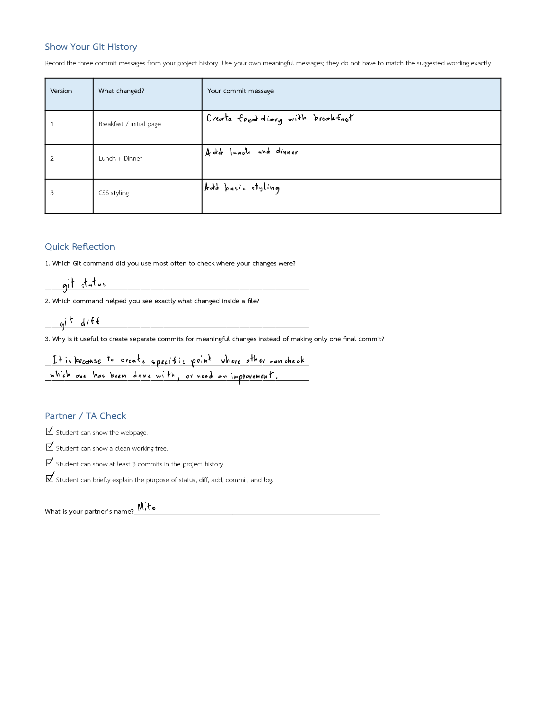

About Me
Name: Ati Sripanya
Student Code: 6909617547
Personality: Introvert, Shy
What I Built
I will build a website, which is called "The Archive Videos".
Which, is dedicated to preserve Media/Audio Files that will be kept for historical purpose.
For which, User can request data from Server to gives specific data to User requested.
However, because of how much files gathered in singular place, It will be moved to
medias files for convienences.
How I Built It
It will be built similarity of like "Search Engine"
Where User type specific keywords for the intended search results.
After which, It will show variety of files for User to pick from "Search Engine".
As for how "Search Engine" would work, It will look on specific keywords
That User prompt with checking files that have listed keywords.
Reflection
Most Common Issues when it comes to my websites, are- Some Files are Too Big to handle/loading.
This can result User waiting very long, or website not responding at all.
--- This can be temporarily fixed, by putting warning about large files that detected certain threshold. - Sometimes, "Search Engine" can be unreliable.
This is because of User can put mislead keywords on files for others.
--- For this Solution, It will have rating based systems.
In which, it will track if it's positive or negative receptions.
If it's positive, it will be put in first pages of searching list, Otherwise it wouldn't.
It would be adding few things that can be benificial for my website, Such as
- Adding a way to interact website outside "Search Engine".
- Decorate more onto my website for more colorful.
- Have a unique interaction when using website at specific time.
Example

Placeholder for the website itself, not indicated as final/finished version.
garden , an image when User prompt keyword "garden" and selected.
Download Link : garden.jpg
My Portfolio
Independent Challenges of Basic Git
Title: My Food Diary with Git
Type: Course Assignment
Date: 1 September 2026
Role: Solo/Individual Developer
Description: Using HTML, CSS and Git terminal to make the Food Diary
Skills: HTML, CSS and Git
Reflection: When i work on it, I genuinely have no idea on how to make it, or have thought about the Food Diary.
but, with some practice and asking my friends, I have made quite a few things about it.
So, in conclusion, My work for it, is alright, not great but not bad.
Evidence:



Technology Activity
Title: AORUS AI EXPERIENCE CAMPUS ROADSHOW 2026 — Future Ready with AI
Type: Activity
Date: 4 Sep 2026
Role: Audience
Description: Joined in to learn about AI
Skills: Communication, Technology Awareness, Coding
Reflection: First time joining an activity about Technology and i'm excited to see how it works and learning about AI usage.
In conclusion, I have learned about types of AI and how it works.
Evidence: